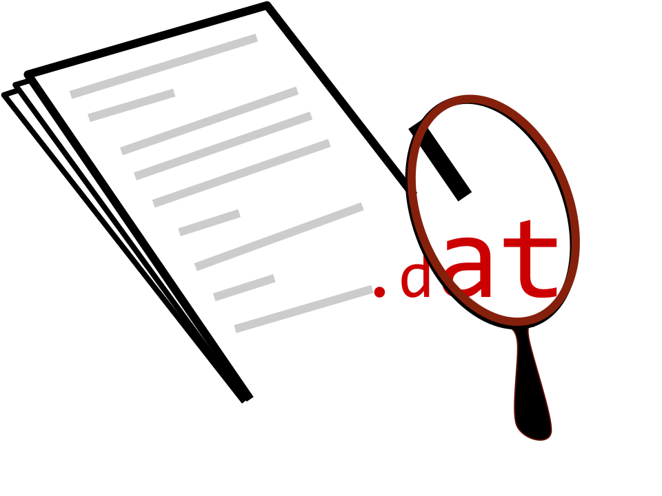

Pyodec
Pyodec
An open-source data file decoder
A library for simple decoding of a broad range of proprietary or non-structured data files, compiled by the scientific community, for the scientific community.
How it works
1. Find your decoder
Get & test your file/string
You may search the file types library, using any information you have about your file (instrument that created it, company, dates)
or
You can pass your file to the
detector module, which will (slowly) try to
find if there is a decoder in the libary that recognizes your file.
then
2a. Decode your file
If a decoder exists, all you have to do is
>>> import pyodec >>> pyodec.decode(filesrc, decoder="myfiledecoder")or
>>> import pyodec.deocders.myfiledecoder as thedecoder >>> thedecoder.decode(filesrc)
Or one of the several other ways you can call a decoder method on a file or string
2b. Write a new file decoder
If your file did not exist, then you were going to have to write the code to decode it anyway. But using pyodec you can take advantage of the text file API